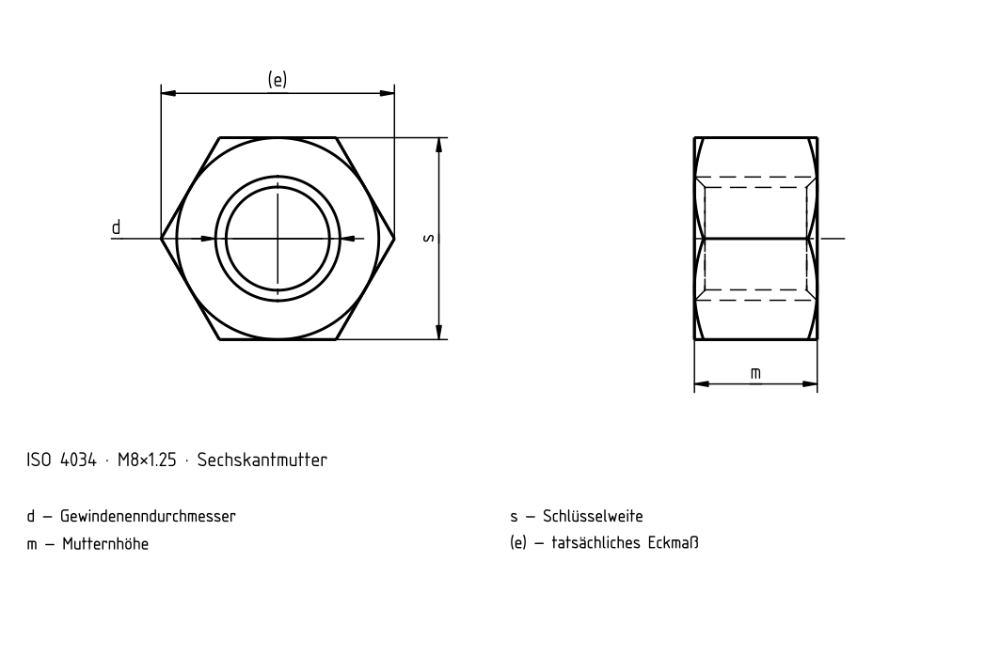

Sechskantmuttern — Produktklasse C
Historische Quelle; Zahlenwerte und Ausnahmen sind nicht vollständig gegen die gültige Norm geprüft.

Sechskantmuttern — Produktklasse C
| d | e_min. [mm] | m_max. [mm] | m_min. [mm] | s [mm] h14 |
|---|---|---|---|---|
| M5 | 8,63 | 5,6 | 4,4 | 8 |
| M6 | 10,89 | 6,4 | 4,9 | 10 |
| M8 | 14,2 | 7,9 | 6,4 | 13 |
| M10 | 17,59 | 9,5 | 8,0 | 16 |
| M12 | 19,85 | 12,2 | 10,4 | 18 |
| M14 | 22,78 | 13,9 | 12,1 | 21 |
| M16 | 26,17 | 15,9 | 14,1 | 24 |
| M18 | 29,56 | 16,9 | 15,1 | 27 |
| M20 | 32,95 | 19 | 16,9 | 30 |
| M22 | 37,29 | 20,2 | 18,1 | 34 |
| M24 | 39,55 | 22,3 | 20,2 | 36 |
| M27 | 45,2 | 24,7 | 22,6 | 41 |
| M30 | 50,85 | 26,4 | 24,3 | 46 |
| M33 | 55,37 | 29,5 | 27,4 | 50 |
| M36 | 60,79 | 31,9 | 29,4 | 55 |
| M39 | 66,44 | 34,3 | 31,8 | 60 |
| M42 | 71,3 | 34,9 | 32,4 | 65 |
| M45 | 76,95 | 36,9 | 34,4 | 70 |
| M48 | 82,6 | 38,9 | 36,4 | 75 |
| M52 | 88,25 | 42,9 | 40,4 | 80 |
| M56 | 93,56 | 45,9 | 43,4 | 85 |
| M60 | 99,21 | 48,9 | 46,4 | 90 |
| M64 | 104,86 | 52,4 | 49,4 | 95 |